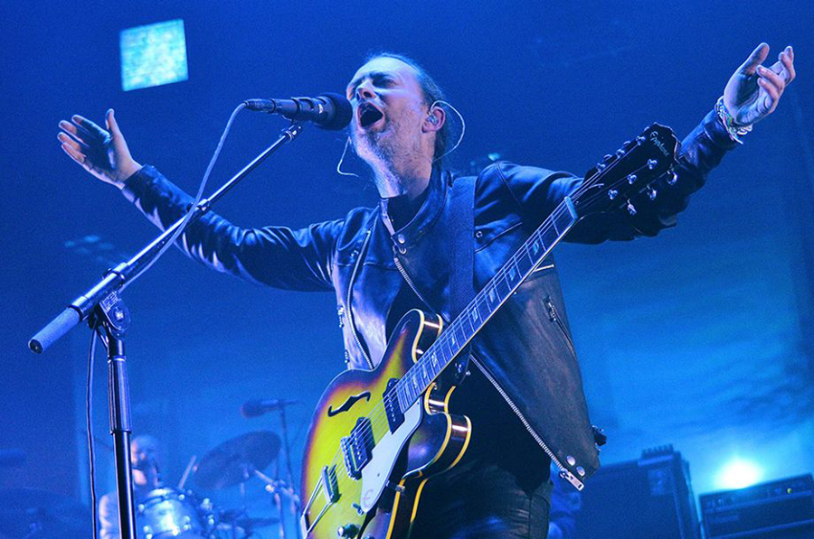
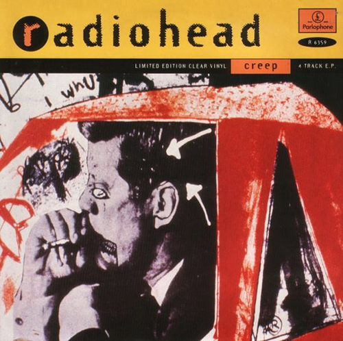
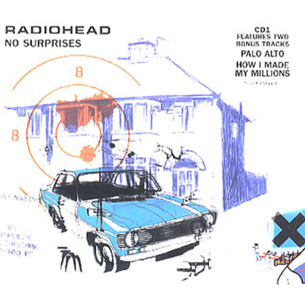
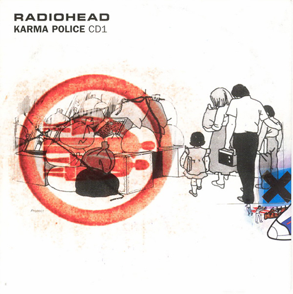

얼터너티브 음악과 현대 록 음악의 상징.
1990년대 그런지와 브릿팝 열풍을 깨고 나타나 음악판을 휘어잡은 밴드.
수많은 장르를 조합하고 앨범마다 컨셉과 사운드를 달리하는 종합적인 작법을 일반화시키는 동시에,
상업적인 성공을 거두고 압도적인 평론계의 찬사를 한 몸에 받았다.

라디오헤드는 1985년에 결성된 5인조 얼터너티브 록밴드이다.
라디오헤드는 90년대와 2000년대에서 특별한 평가를 받았으며 라디오헤드의 음악은 많은 청취자들과 비평가들의 리스트에 오른다.
2005년 라디오헤드는 잡지사 롤링 스톤의 "역사상 가장 위대한 음악가들" 리스트에 73위로 랭크되었다.
동시에 조니그린우드와 에드오브라언은 롤링스톤의 위대한 기타 연주자로 올라와있으며 또한 톰요크는 가장 위대한 싱어로 올라와있다.
Recommended Song

Creep
1992년 9월 21일에 데뷔 싱글로 먼저 나왔으며 첫 앨범 Pablo Honey 에 수록된 곡이다.
처음에 차트에서 그리 성공하지 못했지만 1993년 재발매 때 세계적으로 히트 치게 되었다.
그러나 '라디오헤드 = Creep' 하나로만 이미지가 굳어지자 라디오헤드는 이 곡을 좋아하지 않게 되었다.

No Surprises
1998년 1월 12일에 발매된 앨범 OK Computer 의 수록곡이다.
No Surprises는 가장 황량하며 무기력한 노래로,
비치 보이즈의 Wouldn't It Be Nice 에서 영향을 받았다.

Karma Police
1998년 1월 12일에 발매된 앨범 OK Computer 의 수록곡이다.
어둡고 음울한 분위기의 곡으로 키보드와 어쿠스틱 기타가 주가 되는 곡으로 초중반부는 약간 음산하게 느껴지기도 한다.
다양한 전자 효과음들의 도입, 치밀한 구성, 라디오헤드 특유의 슬프지만 몽환적인 사운드가
환상적이라는 평을 많이 받았고, OK Computer의 대표적인 명곡 중 하나로 자리매김했다.